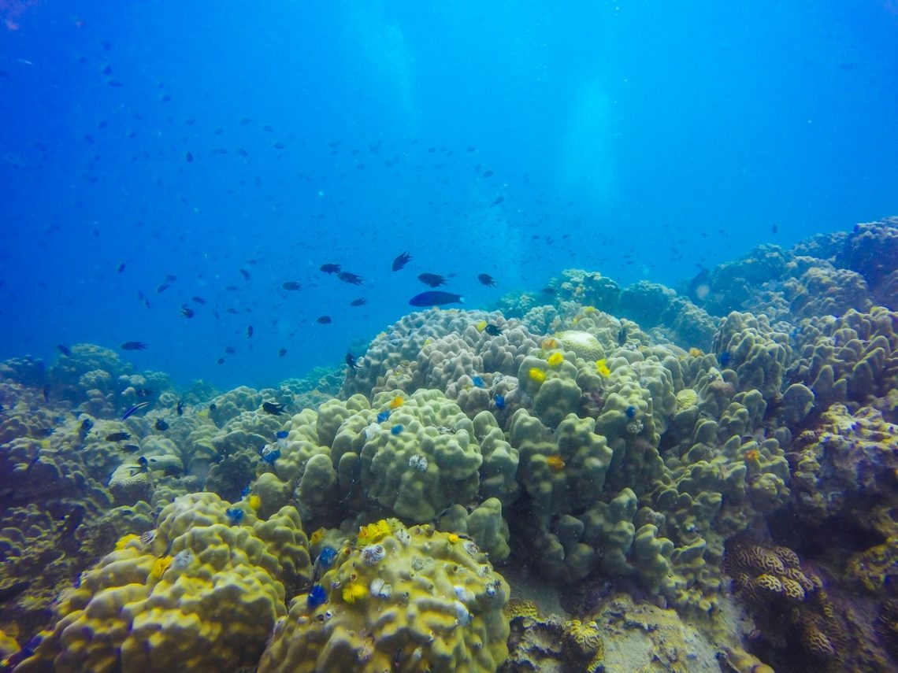
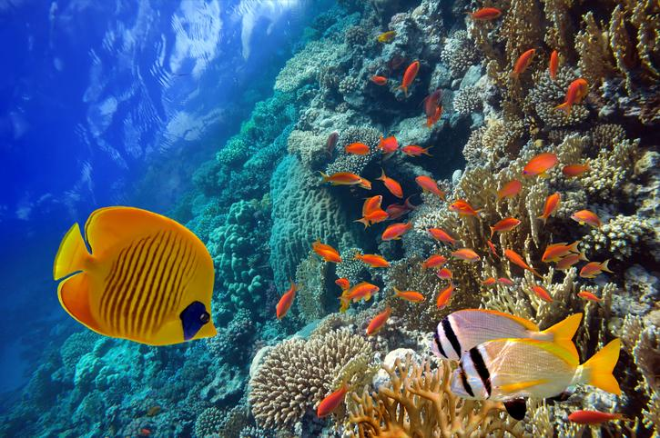

Entendemos por hidrosfera a la porción de la Tierra ocupada por océanos, mares, ríos, lagos y otros tipos de masas de agua. En cuanto a las características del hábitat acuático, la temperatura estable es fundamental para la supervivencia de la biota adaptada al agua. Esto difiere ampliamente con el hábitat terrestre, que se caracteriza por los cambios bruscos de temperatura.
Dentro de los componentes del hábitat acuático que posibilitan la vida en el agua, podemos distinguir entre:
Como sabrás no todos los ecosistemas acuáticos son iguales y, justamente, los hábitats existentes en ecosistemas marinos difieren ampliamente en sus características, con respecto a los hábitats de ecosistemas de ríos, lagos y lagunas. Por ello, existen distintos tipos de hábitats acuáticos que a continuación mencionaremos lo que existe
Estos hábitats incluyen océanos, mares y marismas. Las mayoría de especies que viven en estos hábitats se desarrollan prácticamente en oscuridad, debido a que la luz solo penetra hasta los 100 metros de profundidad. Además, otra característica principal el la presencia de concentraciones de sales a las cuales la biota está adaptada a vivir.
Aquí se incluyen hábitats dentro de cuerpos de aguas que están alejados de mares u océanos, como ríos, lagos, lagunas y más. Según la velocidad de la corriente de agua y la cantidad sedimentos suspendidos, el agua puede ser mas o menos turbia. Precisamente la turbidez y también la profundidad, determinan la claridad y luminosidad del hábitat.